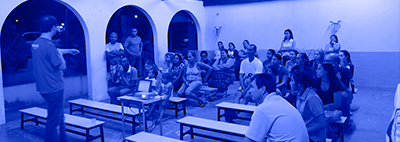

Rotary Club de Bauru
Ano rotário 2025-26 - Plano de Atividades
PROJETOS REALIZADOS PELO
Rotary Club de Bauru
Relógio da Amizade “Rotary” - Pça D. Pedro II
1966/67
Escola Rotary
1969/70 Construção de Escola na Vila Santa Luzia
Acervo Histórico Museu “Morgado de Matheus”
1979/80
Praça Rotary - Avenida Nações Unidas
1979/80 Construção de Praça em homenagem ao Rotary
Orquestra Arte e Cultura de Bauru
1988/89. Inauguração, divulgação e operacionalidade
Bolsas Profissionalizantes
1993/2001 - parceria com Colégio Prevê Objetivo
Bolsas da Amizade
1996/2000
Marco Rotário - Avenida Nações Unidas
2000/01 - Em parceria com demais clubes da cidade

Marco do Centenário de Rotary International
2004/05 - Em parceria com demais clubes de Bauru
Projeto Bom Companheiro
Desde 1966-67, em parceria com a Escola Rotary (Vila Santa Luzia)
Cozinha Industrial da Vila Vicentina
2007-08 - Equipamentos de cozinha mais câmara Fria
Equipamento de Suporte à Vida - Maternidade Sta. Isabel
2007-08
NRDC Pousada da Esperança
2013-14
Lavanderia Industrial do Esquadrão da Vida
2015-16